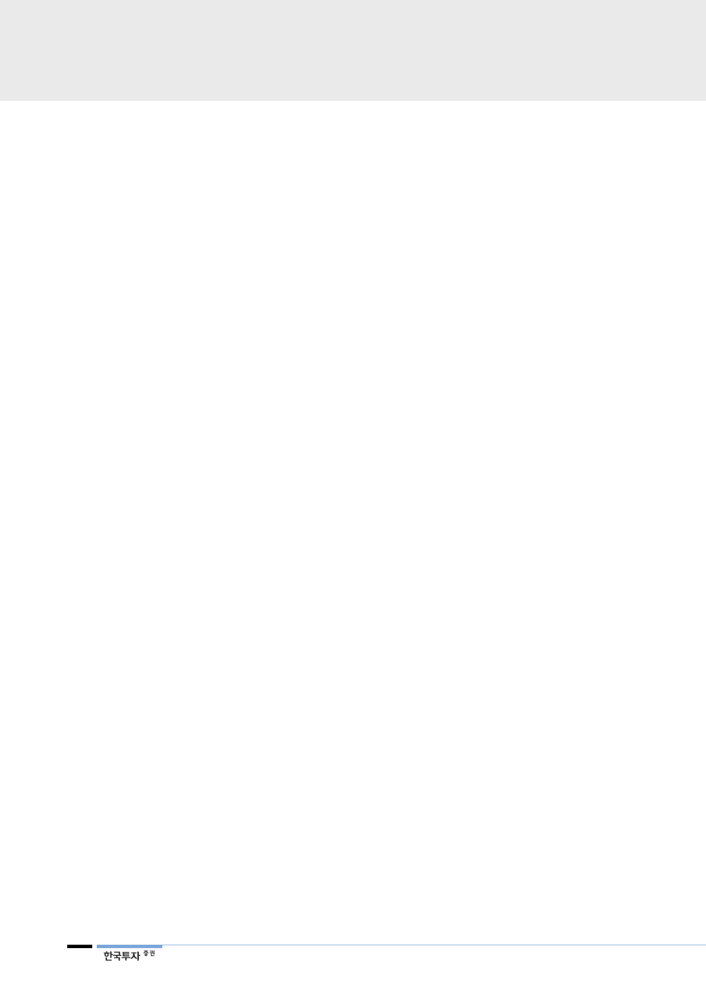

철강·비철금속
기업개요 및 용어해설
고려아연은 1978년 아연제련공장을 시작으로 아연, 연, 금, 은, 동, 인듐, 갈륨 및 황산 등을 생산하는 종합비철금속 제
련회사로 성장하였다. 아연 생산량 기준으로 Nyrstar(벨기에), Glencore Xstrata(글로벌기업), Hindustan Zinc(인도)에
이어 세계 4위 규모(영풍과 합산할 경우 세계 1위)이다. 아연과 연 정광을 광산으로부터 매입하여 제련함으로써 아연, 연
을 생산한다. 뿐만 아니라 부산물 재처리를 통해 금, 은, 동 등 기타 유가금속까지 회수한다. 특히 QSL 공법과 독자적인
fumer 기술을 통해 세계 제련사 중 가장 높은 금속회수율을 자랑하고 있다. 2016년 기준 매출비중은 은 29%, 아연
33%, 연 20%, 동 3%, 금 12%, 기타 5%이다.
기본 제련 수수료: 제련사가 광산으로부터 정광을 구매할 때 정광 가격에서 차감. 높을수록 제련사가 유리
아연 프리미엄: 기준 가격과 판매 가격의 차이. 금속의 수급 상황, 지리적 위치 등에 의해 변동
Free metal: 제련사가 광산으로부터 정광을 구매할 때 일정 비율만큼 할인하는 것
30